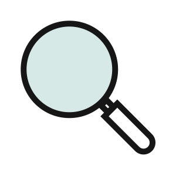
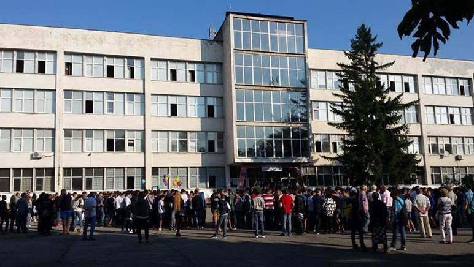
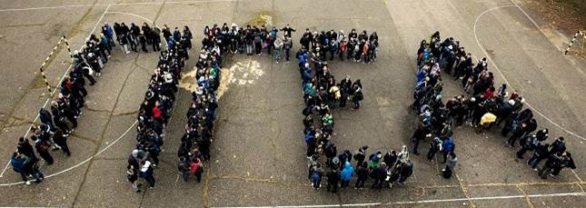

| История |
Къде сме ние: |
| През 1951 г. се основава техникум за подготовка на техници по силни и слаби токове „Сергей Миронович Киров“. През 1963 г. техникум „Киров“ получава нова сграда на бул. „Овча купел“ 1. Сградата има над 75 помещения, физкултурен салон и работилници. През 1976 г. в училището се откриват класове по автоматизация и роботика. През 2000 г. по инициатива на училищното настоятелство започва модернизация на училището. Изграждат се фонетичен кабинет, видеозала, лаборатория по физика, три компютърни кабинети, фитнес зала, лаборатории по автоматизация и роботика с техника от немската фирма „FESTO“, мултимедиен кабинет за специалността „Електрически централи и мрежи“, кабинет по роботика. През 2002 г. училището се преименува на Професионална гимназия по електротехника и автоматика. През 2005 г. се въвежда новата специалност – „Компютърна техника и технологии“, на следващата 2006 г. – специалност „Компютърни мрежи“, през 2008 г. – специалностите „Системно програмиране“ и „Програмно осигуряване“, а през 2013 г. – специалност „Икономическа информатика“. | |
| Материална база |
 |
| -Учебни зали, оборудвани с мултимедийни системи и интерактивни дъски;
-Над 20 модерно оборудвани компютърни кабинета, специализирани кабинети по практика и лаборатории по цифрова и аналогова схемотехника; -Съвременно оборудвана кино зала за представления и прожекции; -Електронна библиотека; -Спортна зала, физкултурен салон, училищен двор за спортни занимания. |
|
| Прием |  |
| -Компютърна техника и технологии (техник на компютърни системи)
-Компютърни мрежи (техник на компютърни системи) -Икономическа информатика (икономист информатик) -Системно програмиране (системен програмист) -Оптически комуникационни системи |